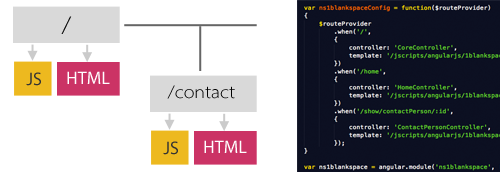

| |
1BLANKSPACE
free open source app code
BRINGING IN ANGULARJS
|
PART OF THE JOURNEY TO GET MORE JAVASCRIPT INTO ENTERPRISES
|
| BACKGROUND |
| After hearing many people state that you can't build a robust ERP in JavaScript - I decided to prove that you can and to build some example code that could be used by others facing similar traditional thinking and barriers.
In the back-half of 2012, I started building a free open source JavaScript all-of-enterprise "ERP" using as pure JavaScript as possible, ie I resisted using many of the great libraries out there, as I wanted to prove the point about JavaScript, and not get caught up in which library is better than which.
The project was also to prove an architectural approach.
This project uses mydigitalstructure (see disclaimer), but you can of course use any http model data persistence service that works for you. That is not the point of the project.
A method invocation pattern was used and jQuery for HTML element and http data persistence interactions.
This project is under the 1blankspace open source zone, so it is clearly separated from my role at ibCom running mydigitalstructure. If you see 1blankspace it means it is open source and free to use or learn from in any way you wish.
It uses a singleton object approach in the view-controller layer, and functional programming methodologies; as they are often easier to follow in example code sets, given there are fewer "magical" bits that can sometimes throw you when trying to get your head around something new.
It uses CSS class based functional enhancements and the JavaScript creates the HTML view elements dynamically.
The point being that a light-weight and expressive UI framework can be used to create a heavy-hitting robust enterprise app.
As stated earlier, you could take this code and bind it any http based data persistence service using your own model etc
|
| OUTCOME |
| In short, it works! The working example app helps show that you don't need over-the-top heavy frameworks to create enterprise apps.
There is a core 1blankspace namespace, which sets up some core methods and then a series of sub namespaces ("modules") that build up the app.
There is duplication and some repetive hand coding, but as a example app that was not a concern.
In saying that, there are now other contributors (Cassandra & Rob of note) that have focused on adding some final touches and using it in real use cases - which is great.
More on the current 1blankspace all-of-enterprise app
|
| NEXT STAGE |
| In early 2013, I started thinking about the next thing to help in proving that JavaScript is an important part of the enterprise app landscape... I did say I was "volatile" and bored easily (see disclaimer)!
As much as the example code set is fast - faster than I though it would be, given it has 50,000+ lines of code and 1,000+ view methods - it compiles in a fraction of seconds, I wanted to start looking at the other considerations like more separation of concerns/purpose in the view-controller layer and user interaction testing.
At the same time I started to pay more attention to AngularJS.
After getting a sense of it at the first AngularJS meetup (Syd/AU) session in early mid 2013 and reading/watching some great material on it; the next stage in working on 1blankspace became about what I could take out of the 1blankspace core namespace and sub-namespaces ("modules") and hand off to AngularJS. I am doing this incrementally, given it is an enhancement framework and not a replacement framework.
I was also able to draw on some concepts out of the WinJS project I worked on with Cassandra Buono in mid 2012, where we moved the view model metadata into a json object - so less hand-coding!
|
| ENTER ANGULARJS |
| I'm not sure how you work, but having been programming for 30 years (starting with assembler and working way up through at least 15 different languages/environments), I find it crucial to not just start coding, but to read as much as I can and search for the inner beauty of the language/environment; which they all have.
So I read a stack of books on AngularJS,
went to meetups and tried to get inside the head of the creators - making sure I was taking full advantage of its concepts/architecture.
By the end of September 2013, I hope to have a full code set relating to an AngularJS version of 1blankspace completed, but already just by finding AngularJS's beauty, I am a better JavaScript programmer - even after 13 years of using JavaScript, every day is a learning day! :-)
Following are my own "notes" that I have been working through to help me adjust my thinking and to get an understanding of AngularJS - as it's not just about a better way to write code.
|
| SORTING THROUGH THE CONCEPTS |
| The first thing was to work out who's who in the AngularJS zoo and what can be handed off!
I found "Instant AngularJS Starter" to be really good for sorting this out.
When working through a new environment, I personally use a multi-pass method; on each pass I extract out some new knowledge and incrementally build up my own knowledge, then put the key concepts into notes that relate to the initial use case that I am trying to solve. I find the more I put into notes, the more I free up my brain to absorb in the next pass through and more concepts.
|
| MY NOTES |
|
KEY ANGULARJS CONCEPTS
| Templates |
html elements |
| Directives |
reusable html elements (templates) with parameters (attributes) - define by element (E), class (C) or attribute (A). Prefer attribute, to be consistent with core angular directives. |
| Modules |
app namespaces |
| Data binding |
view to controller communication |
| Direct Injection |
controllers/components |
|
|
THE CHANGE
|
| |
JS/JQUERY |
JS/JQUERY/ANGULARJS |
VIEW
See & do |
Uses 5 foundation DIVs to hold dynamically controller created HTML elements.
|
Templates (HTML) |
| $scope, ng-model |
CONTROLLER
properties & functions |
.on(), .ajax(), .jQuery() |
Functions (JS) |
| service, provider |
MODEL
store data
view-model |
Not applicable, in that the controller is working directly with the hosted model via http. |
Current object data & functions (JS) to manage the model. |
| http |
|
$http |
| MODEL |
mydigitalstructure.com |
mydigitalstructure.com |
|
|
In the non AngularJS version, the controller is doing all the work and using the hosted model as support. The view gets some help from CSS, in that it is doing the look and position work.
In the AngularJS version, work is handed to AngularJS which then distributes to the view, controller and view-model as required.
|
| VIEW |
- Loose coupling between view and controllers - bind using routes
- The same view can be used for multiple controllers
- Routes in controller

Built in directives...
ng-app="1blankspace" - can have many apps within the one Javascript window.
ng-model - way to set properties in the controller
{{ }} to "print to screen", use | for parameters
ng-bind - use as alternative to {{}}
ng-switch
ng-pluralize
ng-click
input: ng-required, ng-pattern
ng-readonly
ng-selected
ng-disabled
$id = $scope.id (unique)
$window = js.window
$locale
ng-cloak - cool for rendering, stay hidden and show all once.
format parameters | currency, uppercase, lowercase, number, json, linky (convert to links elements) - set these on HTML element.
ng-repeat:
$index - current index in repeat loop
$first
$last
$middle
ng-class-odd=' "myEvenClass" '
ng-class-even=' "myOddClass" '
|
|
CONTROLLER
|
| .controller()
$scope
$location
$routeParam
ng-init
|
|
MODEL (view-model)
|
$http
.service() or
.factory() or
.provider() to make model persistant via http.
Use .factory() and .then to deliver back promise to the controller - who can then update the scope for the view.
|
| DESIGN |
| Specifics of the 1blankspace all-of-enterprise app design. |
| ROUTE |
NOTES |
| #/
|
Uses ng-switch based on user.status to show loading... or if user.status=ER, then the auth directive. |
| #/home
|
Uses the core controller and model to get list of objects and shows the list with route URIs. |
#/[object]/show
#/contactPerson/view
|
Shows a list of contact persons. |
| #/[object]/shows/[id]
|
Shows the selected contact person. |
|
|
Set up directives for common functions (view/controller), starting with:
- Attachments
- Search
- Save
- Delete
|
| CODE |
|
NOTE! As at late August 2013, I am still shaping the code - so expect errors!
|
Example code on github »
|
|
|
|